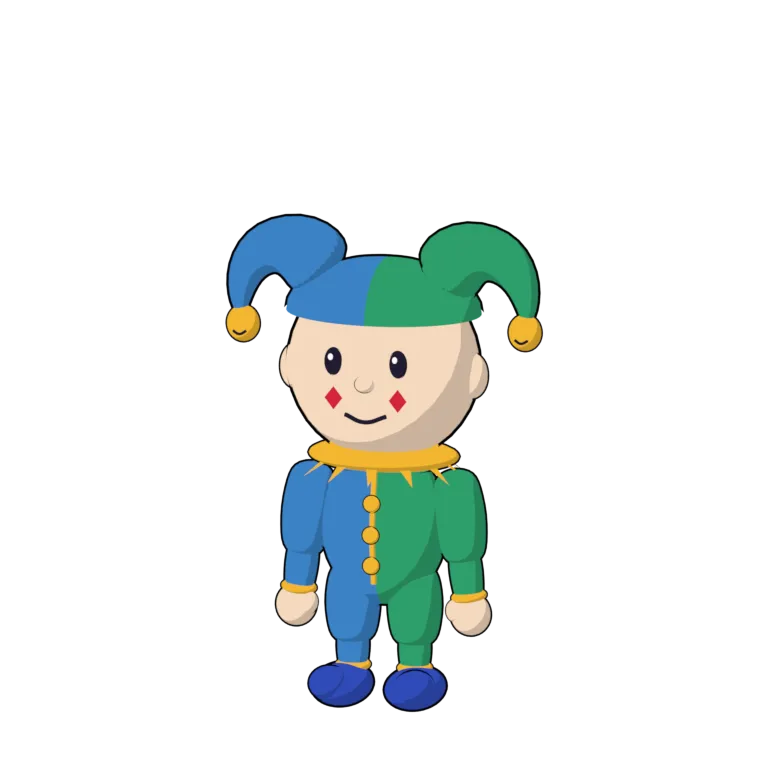
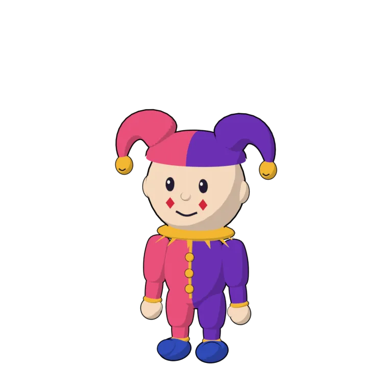
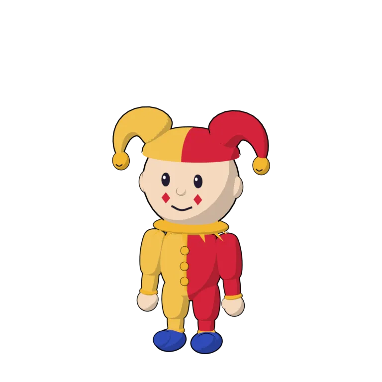

One laptop, one webcam, 2 to 4 players.
From the bank, or Surprise me. Blind or Watch first.
Everyone gets a secret part: a person, or a thing like the dog.
One turn at a time. Everyone else looks away.
Just a stick figure or an outline. Copy it with body, hand, head or foot.
3, 2, 1, then copy it live: your part left, you right.
Limb directions, mirrored. Full credit within 15 degrees, none past 60. Kept secret.
The real clip, with everyone's cutouts on their parts. Saved as a video.



Faces on jesters, a spotlight, one winner.
Bank clips arrive already analysed,
so a round starts as soon as the video loads.
Then: same clip, one more go.